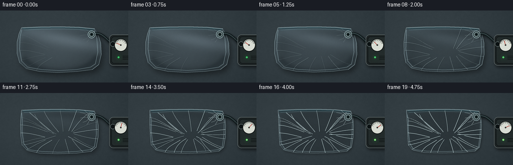

CODING AGENTS AS PIXEL WORLD MODELS
traex/GPT-5.6-Sol · mechanics_0026
点击播放 · 原生 RGB 像素
逐轮保存的候选
回放视频、检查图与代码变化。
每份候选均可单独播放。实际图片检查记录在下方工具轨迹中。
候选 01播放与检查图
点击播放 · 原生 RGB 像素

展开代码变化
--- 上一保存版本
+++ 本次保存版本
@@ -0,0 +1,229 @@
+from pathlib import Path
+import math
+import numpy as np
+from PIL import Image, ImageDraw, ImageFilter
+import artifact_io
+
+CASE_DIR = Path(__file__).resolve().parent
+W, H, N = 256, 144, 20
+S = 4
+RW, RH = W*S, H*S
+rng = np.random.default_rng(260026)
+
+
+def sc(v):
+ return int(round(v*S))
+
+
+def pts_scaled(points):
+ return [(sc(x), sc(y)) for x, y in points]
+
+
+def bezier_points(p0, p1, p2, p3, n=50):
+ t = np.linspace(0, 1, n)
+ a = ((1-t)**3)[:,None]*np.array(p0)
+ b = (3*((1-t)**2)*t)[:,None]*np.array(p1)
+ c = (3*(1-t)*(t**2))[:,None]*np.array(p2)
+ d = (t**3)[:,None]*np.array(p3)
+ return [tuple(x) for x in (a+b+c+d)]
+
+
+def draw_curve(draw, coords, fill, width):
+ ps = bezier_points(*[tuple(sc(q) for q in p) for p in coords], n=65)
+ draw.line(ps, fill=fill, width=max(1, sc(width)), joint='curve')
+
+# A cool, lightly mottled stone work surface. Texture is fixed to make the camera feel locked.
+yy, xx = np.mgrid[0:RH, 0:RW]
+base = np.zeros((RH, RW, 3), dtype=np.float32)
+# broad directional light and fine stone noise
+noise_small = rng.normal(0, 1, (H, W))
+noise_img = Image.fromarray(np.uint8(np.clip(noise_small*26+128,0,255))).resize((RW,RH), Image.Resampling.BICUBIC).filter(ImageFilter.GaussianBlur(sc(1.4)))
+noise = (np.asarray(noise_img).astype(float)-128)/11
+fine = rng.normal(0, 1.4, (RH,RW))
+light = 5.5*(1-xx/RW) + 3.5*(1-yy/RH)
+vign = -10*((xx-RW*.50)**2/(RW*.72)**2 + (yy-RH*.48)**2/(RH*.90)**2)
+for c, val in enumerate((48, 58, 63)):
+ base[:,:,c] = val + light + vign + noise + fine
+# subtle diagonal slate grain
+for k in range(-300, 500, 43):
+ dist = np.abs((yy/S) - (0.08*(xx/S)+k))
+ base += (dist[...,None] < .22) * np.array([1.2,1.5,1.6])
+base = np.uint8(np.clip(base,0,255))
+BASE = Image.fromarray(base, 'RGB').convert('RGBA')
+
+# deterministic final-stage wrinkle curves, all in image coordinates.
+wrinkles = [
+ ((43,49),(62,52),(76,66),(99,75)), ((39,64),(58,64),(74,70),(95,78)),
+ ((40,80),(57,79),(72,84),(90,88)), ((42,99),(59,96),(68,91),(89,89)),
+ ((51,115),(65,107),(75,101),(91,94)), ((73,120),(78,107),(90,103),(104,94)),
+ ((105,122),(108,110),(112,103),(119,93)), ((138,121),(135,109),(132,101),(130,92)),
+ ((166,118),(155,108),(149,100),(143,91)), ((189,109),(171,104),(160,96),(147,88)),
+ ((198,92),(178,91),(162,86),(148,82)), ((198,73),(178,74),(162,78),(146,80)),
+ ((197,58),(177,61),(162,69),(145,78)), ((180,39),(165,48),(154,62),(143,77)),
+ ((153,35),(148,49),(143,62),(137,76)), ((120,35),(123,50),(125,63),(126,77)),
+ ((88,36),(94,51),(106,65),(117,78)), ((59,39),(72,50),(85,63),(107,80)),
+ ((47,56),(63,57),(77,67),(108,82)), ((47,104),(66,101),(84,94),(111,86)),
+ ((185,112),(169,106),(151,95),(136,87)), ((69,42),(75,56),(89,70),(112,82)),
+ ((174,45),(161,58),(151,70),(139,80)), ((92,119),(95,108),(102,99),(116,91)),
+ ((155,116),(151,104),(142,98),(132,91)), ((195,83),(176,84),(160,84),(145,83)),
+]
+
+
+def pouch_outline(p):
+ # As air leaves, the unsupported film pulls inward and the corners gather.
+ return [
+ (43,34), (77,32.5), (121,32), (158,33), (188,36),
+ (195-3*p,46), (201-8*p,65), (202-10*p,88), (197-8*p,108),
+ (184-4*p,118-2*p), (153,122-3*p), (115,124-4*p), (79,122-3*p),
+ (52+3*p,116-2*p), (39+8*p,104), (34+12*p,86), (34+11*p,63), (38+6*p,46)
+ ]
+
+
+def render_frame(i):
+ t = i/(N-1)
+ p = t*t*(3-2*t) # timelapse collapse progress
+ q = 1-p
+ im = BASE.copy()
+ poly = pouch_outline(p)
+ pmask = Image.new('L',(RW,RH),0)
+ ImageDraw.Draw(pmask).polygon(pts_scaled(poly), fill=255)
+
+ # Pillow shadow: deep and broad while inflated, tight and faint after collapse.
+ sh = Image.new('RGBA',(RW,RH),(0,0,0,0))
+ sd = ImageDraw.Draw(sh)
+ shadow_poly = [(x+2.0+3*q, y+2.5+5*q) for x,y in poly]
+ sd.polygon(pts_scaled(shadow_poly), fill=(0,0,0,int(70+28*q)))
+ sh = sh.filter(ImageFilter.GaussianBlur(sc(2.2+3.2*q)))
+ im = Image.alpha_composite(im, sh)
+
+ # Plastic body: refracts/desaturates the stone underneath. Initial central dome is luminous.
+ arr = np.zeros((RH,RW,4),dtype=np.uint8)
+ X, Y = xx/S, yy/S
+ # asymmetrical pillow dome and cool edge falloff
+ ell = ((X-116)/92)**2 + ((Y-78)/54)**2
+ dome = np.clip(1-ell,0,1)**0.55
+ # large soft reflection from upper-left studio strip
+ strip = np.exp(-((Y-(40+0.19*(X-40))) / (10+6*q))**2)
+ edgeglow = np.clip(ell-.45,0,.55)/.55
+ alpha = (20 + 48*q*dome + 14*edgeglow + 25*q*strip).astype(np.uint8)
+ maska = np.asarray(pmask)
+ alpha = (alpha.astype(np.float32)*(maska/255)).astype(np.uint8)
+ arr[:,:,0] = np.clip(114 + 48*dome*q + 42*strip*q,0,255)
+ arr[:,:,1] = np.clip(145 + 44*dome*q + 43*strip*q,0,255)
+ arr[:,:,2] = np.clip(158 + 46*dome*q + 46*strip*q,0,255)
+ arr[:,:,3] = alpha
+ im = Image.alpha_composite(im, Image.fromarray(arr,'RGBA'))
+
+ # Bulge shading on lower-right edge (soft, physical volume cue).
+ if q > .01:
+ shade = Image.new('RGBA',(RW,RH),(0,0,0,0))
+ d = ImageDraw.Draw(shade)
+ d.arc((sc(38),sc(34),sc(200),sc(127)), 14, 158, fill=(5,15,21,int(75*q)), width=sc(5+4*q))
+ shade.putalpha(Image.composite(shade.getchannel('A'),Image.new('L',(RW,RH),0),pmask))
+ shade = shade.filter(ImageFilter.GaussianBlur(sc(3.2)))
+ im = Image.alpha_composite(im,shade)
+
+ # Crisp perimeter/seams.
+ edge = Image.new('RGBA',(RW,RH),(0,0,0,0)); ed=ImageDraw.Draw(edge)
+ closed = pts_scaled(poly+[poly[0]])
+ ed.line(closed, fill=(198,224,229,150), width=sc(.75), joint='curve')
+ ed.line(pts_scaled([(x+.9,y+1.2) for x,y in poly+[poly[0]]]), fill=(23,42,48,90), width=sc(.45), joint='curve')
+ # Heat-sealed margins down sides and along bottom.
+ ed.line(pts_scaled([(43,39),(40+7*p,52),(39+8*p,77),(43+7*p,101),(54+3*p,112)]), fill=(185,216,224,95), width=sc(1.15))
+ ed.line(pts_scaled([(188,40),(193-2*p,56),(195-5*p,83),(190-3*p,107),(181,113)]), fill=(191,222,228,104), width=sc(1.05))
+ ed.line(pts_scaled([(54+3*p,113),(83,118-2*p),(118,120-3*p),(153,118-2*p),(181,113)]), fill=(185,218,225,92), width=sc(1.15))
+ im = Image.alpha_composite(im,edge)
+
+ # Two-line airtight zipper/heat seal at the top, visually unmistakable as a sealed pouch.
+ seal = Image.new('RGBA',(RW,RH),(0,0,0,0)); d=ImageDraw.Draw(seal)
+ d.line(pts_scaled([(45,36),(80,34.5),(121,34),(158,35),(187,38)]), fill=(19,55,65,155), width=sc(2.0))
+ d.line(pts_scaled([(45,35.1),(80,33.5),(121,33),(158,34),(188,37)]), fill=(206,235,238,205), width=sc(.85))
+ d.line(pts_scaled([(48,39),(81,37.3),(121,36.8),(157,37.7),(185,40.3)]), fill=(126,190,202,120), width=sc(.85))
+ im=Image.alpha_composite(im,seal)
+
+ # Wrinkles progressively appear and tighten as the two film walls meet.
+ wr = Image.new('RGBA',(RW,RH),(0,0,0,0)); wd=ImageDraw.Draw(wr)
+ visible_count = int(6 + p*len(wrinkles))
+ intensity = int(35 + 145*(p**1.15))
+ for j,curve in enumerate(wrinkles[:visible_count]):
+ # Fine dark trough, offset highlight, and a shorter glint toward the edge.
+ width = .38 + .34*p + .18*((j*7)%3)
+ offcurve = tuple((x+0.65,y+0.7) for x,y in curve)
+ draw_curve(wd, offcurve, (7,18,22,intensity*2//3), width+.28)
+ draw_curve(wd, curve, (220,242,243,min(220,intensity)), width)
+ if j%4==0 and p>.3:
+ c2=(curve[0],curve[1],curve[2],((curve[3][0]*.72+curve[2][0]*.28),(curve[3][1]*.72+curve[2][1]*.28)))
+ draw_curve(wd,c2,(245,252,249,int(70*p)),.32)
+ # a few small compression ripples around valve
+ for j in range(5):
+ ang=2.1+j*.47
+ r1,r2=7,18+2*j
+ a=(182+math.cos(ang)*r1,48+math.sin(ang)*r1)
+ b=(182+math.cos(ang)*r2,48+math.sin(ang)*r2)
+ mid=((a[0]*.55+b[0]*.45)+math.sin(j)*3,(a[1]*.55+b[1]*.45)+math.cos(j)*2)
+ cv=(a,mid,mid,b)
+ draw_curve(wd,cv,(220,241,241,int(25+125*p)),.5)
+ wr.putalpha(Image.fromarray((np.asarray(wr.getchannel('A'),dtype=np.uint16)*(np.asarray(pmask,dtype=np.uint16))/255).astype(np.uint8)))
+ im=Image.alpha_composite(im,wr)
+
+ # Valve and hose are drawn over film. Hose runs to a compact pump at frame right.
+ tube_shadow=Image.new('RGBA',(RW,RH),(0,0,0,0)); td=ImageDraw.Draw(tube_shadow)
+ hose=bezier_points((sc(183),sc(47)),(sc(205),sc(42)),(sc(211),sc(58)),(sc(225),sc(67)),55)
+ td.line([(x+sc(1.2),y+sc(2)) for x,y in hose],fill=(0,0,0,100),width=sc(8))
+ tube_shadow=tube_shadow.filter(ImageFilter.GaussianBlur(sc(2)))
+ im=Image.alpha_composite(im,tube_shadow)
+ tube=Image.new('RGBA',(RW,RH),(0,0,0,0)); td=ImageDraw.Draw(tube)
+ td.line(hose,fill=(18,27,29,255),width=sc(6),joint='curve')
+ td.line([(x-sc(.6),y-sc(.8)) for x,y in hose],fill=(82,103,105,190),width=sc(1.25),joint='curve')
+ # valve pad
+ td.ellipse((sc(175.3),sc(40.3),sc(190.2),sc(55.2)),fill=(26,42,45,165),outline=(190,218,220,220),width=sc(1))
+ td.ellipse((sc(178),sc(43),sc(187.5),sc(52.5)),fill=(61,80,82,255),outline=(215,231,230,220),width=sc(.7))
+ td.ellipse((sc(180.5),sc(45.5),sc(185),sc(50)),fill=(11,19,20,255))
+ im=Image.alpha_composite(im,tube)
+
+ # Pump body, partly out of frame, with vacuum gauge documenting extraction.
+ pump_sh=Image.new('RGBA',(RW,RH),(0,0,0,0)); pd=ImageDraw.Draw(pump_sh)
+ pd.rounded_rectangle((sc(220),sc(52),sc(268),sc(114)),radius=sc(9),fill=(0,0,0,135))
+ pump_sh=pump_sh.filter(ImageFilter.GaussianBlur(sc(3)))
+ im=Image.alpha_composite(im,pump_sh)
+ pump=Image.new('RGBA',(RW,RH),(0,0,0,0)); pd=ImageDraw.Draw(pump)
+ pd.rounded_rectangle((sc(218),sc(48),sc(270),sc(110)),radius=sc(8),fill=(28,34,35,255),outline=(97,107,107,255),width=sc(1))
+ pd.rounded_rectangle((sc(222),sc(52),sc(265),sc(106)),radius=sc(6),fill=(35,43,43,255),outline=(14,19,20,255),width=sc(1))
+ # hose socket
+ pd.ellipse((sc(220),sc(62),sc(230),sc(72)),fill=(12,18,19,255),outline=(126,141,141,255),width=sc(.7))
+ # analog gauge
+ cx,cy,r=241,69,13
+ pd.ellipse((sc(cx-r),sc(cy-r),sc(cx+r),sc(cy+r)),fill=(216,220,211,255),outline=(9,14,14,255),width=sc(1.2))
+ pd.arc((sc(cx-r+2),sc(cy-r+2),sc(cx+r-2),sc(cy+r-2)),195,345,fill=(71,81,78,255),width=sc(.8))
+ for a in np.linspace(200,340,7):
+ ar=math.radians(a)
+ pd.line((sc(cx+math.cos(ar)*8),sc(cy+math.sin(ar)*8),sc(cx+math.cos(ar)*10),sc(cy+math.sin(ar)*10)),fill=(40,48,45,255),width=sc(.6))
+ # needle sweeps deeper into vacuum over time
+ a=math.radians(205+128*p)
+ pd.line((sc(cx),sc(cy),sc(cx+math.cos(a)*9),sc(cy+math.sin(a)*9)),fill=(177,39,30,255),width=sc(.9))
+ pd.ellipse((sc(cx-1.5),sc(cy-1.5),sc(cx+1.5),sc(cy+1.5)),fill=(45,48,45,255))
+ # green running lamp and vent slots
+ lamp=(64+90*p,193+40*p,108+30*p,255)
+ pd.ellipse((sc(234),sc(91),sc(239),sc(96)),fill=tuple(int(x) for x in lamp),outline=(8,20,12,255),width=sc(.5))
+ for k in range(3):
+ pd.line((sc(245),sc(91+k*3),sc(259),sc(91+k*3)),fill=(12,18,18,255),width=sc(1))
+ pd.line((sc(245),sc(90.5+k*3),sc(258),sc(90.5+k*3)),fill=(72,81,80,100),width=sc(.35))
+ im=Image.alpha_composite(im,pump)
+
+ # Tiny changing reflection pulses imply the pump is operating, without overlays or captions.
+ ledglow=Image.new('RGBA',(RW,RH),(0,0,0,0)); lg=ImageDraw.Draw(ledglow)
+ glow_alpha=int(35+25*(0.5+0.5*math.sin(i*math.pi)))
+ lg.ellipse((sc(230),sc(87),sc(243),sc(100)),fill=(45,220,92,glow_alpha))
+ ledglow=ledglow.filter(ImageFilter.GaussianBlur(sc(4)))
+ im=Image.alpha_composite(im,ledglow)
+
+ # Downsample for natural antialiasing and add subtle sensor grain.
+ rgb=im.convert('RGB').resize((W,H),Image.Resampling.LANCZOS)
+ a=np.asarray(rgb).astype(np.int16)
+ gr=np.random.default_rng(8810+i).normal(0,.55,a.shape[:2])[:,:,None]
+ a=np.clip(a+gr,0,255).astype(np.uint8)
+ return a
+
+frames=np.stack([render_frame(i) for i in range(N)],axis=0)
+artifact_io.save(frames, CASE_DIR)
+print(f"saved {frames.shape} RGB video to {CASE_DIR}")
候选 02播放与检查图

候选 03播放与检查图
点击播放 · 原生 RGB 像素

展开代码变化
--- 上一保存版本
+++ 本次保存版本
@@ -141,19 +141,42 @@
d.line(pts_scaled([(48,39),(81,37.3),(121,36.8),(157,37.7),(185,40.3)]), fill=(126,190,202,120), width=sc(.85))
im=Image.alpha_composite(im,seal)
+ # Broad, irregular crumple facets appear underneath the fine wrinkles. These
+ # low-frequency value changes are important: real transparent film does not
+ # collapse into a tidy set of white lines, but into overlapping shallow planes.
+ facets = Image.new('RGBA',(RW,RH),(0,0,0,0)); fd=ImageDraw.Draw(facets)
+ center=(121.5,83.5)
+ rim=[(43,48),(58,37),(84,34),(112,33),(143,34),(174,37),(193,54),
+ (198,75),(196,99),(181,114),(151,120),(119,121),(86,119),(56,112),
+ (42,97),(38,76),(40,58)]
+ for j in range(len(rim)):
+ a,b=rim[j],rim[(j+1)%len(rim)]
+ # alternating cool highlight and slate-gray transmitted shadow
+ if j%3==0:
+ col=(184,218,222,int(25*p))
+ elif j%3==1:
+ col=(6,20,26,int(30*p))
+ else:
+ col=(95,134,142,int(15*p))
+ fd.polygon(pts_scaled([a,b,(center[0]+((j%4)-1.5)*3,
+ center[1]+((j%5)-2)*1.7)]),fill=col)
+ facets.putalpha(Image.fromarray((np.asarray(facets.getchannel('A'),dtype=np.uint16)*(np.asarray(pmask,dtype=np.uint16))/255).astype(np.uint8)))
+ facets=facets.filter(ImageFilter.GaussianBlur(sc(3.3)))
+ im=Image.alpha_composite(im,facets)
+
# Wrinkles progressively appear and tighten as the two film walls meet.
wr = Image.new('RGBA',(RW,RH),(0,0,0,0)); wd=ImageDraw.Draw(wr)
- visible_count = int(6 + p*len(wrinkles))
- intensity = int(35 + 145*(p**1.15))
+ visible_count = int(1 + p*len(wrinkles))
+ intensity = int(18 + 92*(p**1.15))
for j,curve in enumerate(wrinkles[:visible_count]):
# Fine dark trough, offset highlight, and a shorter glint toward the edge.
- width = .38 + .34*p + .18*((j*7)%3)
+ width = .30 + .20*p + .10*((j*7)%3)
offcurve = tuple((x+0.65,y+0.7) for x,y in curve)
- draw_curve(wd, offcurve, (7,18,22,intensity*2//3), width+.28)
- draw_curve(wd, curve, (220,242,243,min(220,intensity)), width)
+ draw_curve(wd, offcurve, (3,14,19,min(145,intensity)), width+.40)
+ draw_curve(wd, curve, (211,235,237,min(150,intensity)), width)
if j%4==0 and p>.3:
c2=(curve[0],curve[1],curve[2],((curve[3][0]*.72+curve[2][0]*.28),(curve[3][1]*.72+curve[2][1]*.28)))
- draw_curve(wd,c2,(245,252,249,int(70*p)),.32)
+ draw_curve(wd,c2,(239,248,246,int(45*p)),.27)
# a few small compression ripples around valve
for j in range(5):
ang=2.1+j*.47
候选 04播放与检查图
可观测工具轨迹
实际执行的命令与返回图片。
命令 1exit 0
/bin/bash -lc "cat prompt.txt && printf '\\n---RULES---\\n' && cat GENERATION_RULES.md && printf '\\n---SPEC---\\n' && cat task_spec.json"
命令 2exit 0
/bin/bash -lc "find . -maxdepth 2 -type f -printf '%p\\n' | sort | head -200"
命令 3exit 0
/bin/bash -lc "sed -n '1,240p' artifact_io.py"
命令 4exit 0
/bin/bash -lc "cat > generate.py <<'PY'
from pathlib import Path
import math
import numpy as np
from PIL import Image, ImageDraw, ImageFilter
import artifact_io
CASE_DIR = Path(__file__).resolve().parent
W, H, N = 256, 144, 20
S = 4
RW, RH = W*S, H*S
rng = np.random.default_rng(260026)
def sc(v):
return int(round(v*S))
def pts_scaled(points):
return [(sc(x), sc(y)) for x, y in points]
def bezier_points(p0, p1, p2, p3, n=50):
t = np.linspace(0, 1, n)
a = ((1-t)**3)[:,None]*np.array(p0)
b = (3*((1-t)**2)*t)[:,None]*np.array(p1)
c = (3*(1-t)*(t**2))[:,None]*np.array(p2)
d = (t**3)[:,None]*np.array(p3)
return [tuple(x) for x in (a+b+c+d)]
def draw_curve(draw, coords, fill, width):
ps = bezier_points(*[tuple(sc(q) for q in p) for p in coords], n=65)
draw.line(ps, fill=fill, width=max(1, sc(width)), joint='curve')
# A cool, lightly mottled stone work surface. Texture is fixed to make the camera feel locked.
yy, xx = np.mgrid[0:RH, 0:RW]
base = np.zeros((RH, RW, 3), dtype=np.float32)
# broad directional light and fine stone noise
noise_small = rng.normal(0, 1, (H, W))
noise_img = Image.fromarray(np.uint8(np.clip(noise_small*26+128,0,255))).resize((RW,RH), Image.Resampling.BICUBIC).filter(ImageFilter.GaussianBlur(sc(1.4)))
noise = (np.asarray(noise_img).astype(float)-128)/11
fine = rng.normal(0, 1.4, (RH,RW))
light = 5.5*(1-xx/RW) + 3.5*(1-yy/RH)
vign = -10*((xx-RW*.50)**2/(RW*.72)**2 + (yy-RH*.48)**2/(RH*.90)**2)
for c, val in enumerate((48, 58, 63)):
base[:,:,c] = val + light + vign + noise + fine
# subtle diagonal slate grain
for k in range(-300, 500, 43):
dist = np.abs((yy/S) - (0.08*(xx/S)+k))
base += (dist[...,None] < .22) * np.array([1.2,1.5,1.6])
base = np.uint8(np.clip(base,0,255))
BASE = Image.fromarray(base, 'RGB').convert('RGBA')
# deterministic final-stage wrinkle curves, all in image coordinates.
wrinkles = [
((43,49),(62,52),(76,66),(99,75)), ((39,64),(58,64),(74,70),(95,78)),
((40,80),(57,79),(72,84),(90,88)), ((42,99),(59,96),(68,91),(89,89)),
((51,115),(65,107),(75,101),(91,94)), ((73,120),(78,107),(90,103),(104,94)),
((105,122),(108,110),(112,103),(119,93)), ((138,121),(135,109),(132,101),(130,92)),
((166,118),(155,108),(149,100),(143,91)), ((189,109),(171,104),(160,96),(147,88)),
((198,92),(178,91),(162,86),(148,82)), ((198,73),(178,74),(162,78),(146,80)),
((197,58),(177,61),(162,69),(145,78)), ((180,39),(165,48),(154,62),(143,77)),
((153,35),(148,49),(143,62),(137,76)), ((120,35),(123,50),(125,63),(126,77)),
((88,36),(94,51),(106,65),(117,78)), ((59,39),(72,50),(85,63),(107,80)),
((47,56),(63,57),(77,67),(108,82)), ((47,104),(66,101),(84,94),(111,86)),
((185,112),(169,106),(151,95),(136,87)), ((69,42),(75,56),(89,70),(112,82)),
((174,45),(161,58),(151,70),(139,80)), ((92,119),(95,108),(102,99),(116,91)),
((155,116),(151,104),(142,98),(132,91)), ((195,83),(176,84),(160,84),(145,83)),
]
def pouch_outline(p):
# As air leaves, the unsupported film pulls inward and the corners gather.
return [
(43,34), (77,32.5), (121,32), (158,33), (188,36),
(195-3*p,46), (201-8*p,65), (202-10*p,88), (197-8*p,108),
(184-4*p,118-2*p), (153,122-3*p), (115,124-4*p), (79,122-3*p),
(52+3*p,116-2*p), (39+8*p,104), (34+12*p,86), (34+11*p,63), (38+6*p,46)
]
def render_frame(i):
t = i/(N-1)
p = t*t*(3-2*t) # timelapse collapse progress
q = 1-p
im = BASE.copy()
poly = pouch_outline(p)
pmask = Image.new('L',(RW,RH),0)
ImageDraw.Draw(pmask).polygon(pts_scaled(poly), fill=255)
# Pillow shadow: deep and broad while inflated, tight and faint after collapse.
sh = Image.new('RGBA',(RW,RH),(0,0,0,0))
sd = ImageDraw.Draw(sh)
shadow_poly = [(x+2.0+3*q, y+2.5+5*q) for x,y in poly]
sd.polygon(pts_scaled(shadow_poly), fill=(0,0,0,int(70+28*q)))
sh = sh.filter(ImageFilter.GaussianBlur(sc(2.2+3.2*q)))
im = Image.alpha_composite(im, sh)
# Plastic body: refracts/desaturates the stone underneath. Initial central dome is luminous.
arr = np.zeros((RH,RW,4),dtype=np.uint8)
X, Y = xx/S, yy/S
# asymmetrical pillow dome and cool edge falloff
ell = ((X-116)/92)**2 + ((Y-78)/54)**2
dome = np.clip(1-ell,0,1)**0.55
# large soft reflection from upper-left studio strip
strip = np.exp(-((Y-(40+0.19*(X-40))) / (10+6*q))**2)
edgeglow = np.clip(ell-.45,0,.55)/.55
alpha = (20 + 48*q*dome + 14*edgeglow + 25*q*strip).astype(np.uint8)
maska = np.asarray(pmask)
alpha = (alpha.astype(np.float32)*(maska/255)).astype(np.uint8)
arr[:,:,0] = np.clip(114 + 48*dome*q + 42*strip*q,0,255)
arr[:,:,1] = np.clip(145 + 44*dome*q + 43*strip*q,0,255)
arr[:,:,2] = np.clip(158 + 46*dome*q + 46*strip*q,0,255)
arr[:,:,3] = alpha
im = Image.alpha_composite(im, Image.fromarray(arr,'RGBA'))
# Bulge shading on lower-right edge (soft, physical volume cue).
if q > .01:
shade = Image.new('RGBA',(RW,RH),(0,0,0,0))
d = ImageDraw.Draw(shade)
d.arc((sc(38),sc(34),sc(200),sc(127)), 14, 158, fill=(5,15,21,int(75*q)), width=sc(5+4*q))
shade.putalpha(Image.composite(shade.getchannel('A'),Image.new('L',(RW,RH),0),pmask))
shade = shade.filter(ImageFilter.GaussianBlur(sc(3.2)))
im = Image.alpha_composite(im,shade)
# Crisp perimeter/seams.
edge = Image.new('RGBA',(RW,RH),(0,0,0,0)); ed=ImageDraw.Draw(edge)
closed = pts_scaled(poly+[poly[0]])
ed.line(closed, fill=(198,224,229,150), width=sc(.75), joint='curve')
ed.line(pts_scaled([(x+.9,y+1.2) for x,y in poly+[poly[0]]]), fill=(23,42,48,90), width=sc(.45), joint='curve')
# Heat-sealed margins down sides and along bottom.
ed.line(pts_scaled([(43,39),(40+7*p,52),(39+8*p,77),(43+7*p,101),(54+3*p,112)]), fill=(185,216,224,95), width=sc(1.15))
ed.line(pts_scaled([(188,40),(193-2*p,56),(195-5*p,83),(190-3*p,107),(181,113)]), fill=(191,222,228,104), width=sc(1.05))
ed.line(pts_scaled([(54+3*p,113),(83,118-2*p),(118,120-3*p),(153,118-2*p),(181,113)]), fill=(185,218,225,92), width=sc(1.15))
im = Image.alpha_composite(im,edge)
# Two-line airtight zipper/heat seal at the top, visually unmistakable as a sealed pouch.
seal = Image.new('RGBA',(RW,RH),(0,0,0,0)); d=ImageDraw.Draw(seal)
d.line(pts_scaled([(45,36),(80,34.5),(121,34),(158,35),(187,38)]), fill=(19,55,65,155), width=sc(2.0))
d.line(pts_scaled([(45,35.1),(80,33.5),(121,33),(158,34),(188,37)]), fill=(206,235,238,205), width=sc(.85))
d.line(pts_scaled([(48,39),(81,37.3),(121,36.8),(157,37.7),(185,40.3)]), fill=(126,190,202,120), width=sc(.85))
im=Image.alpha_composite(im,seal)
# Wrinkles progressively appear and tighten as the two film walls meet.
wr = Image.new('RGBA',(RW,RH),(0,0,0,0)); wd=ImageDraw.Draw(wr)
visible_count = int(6 + p*len(wrinkles))
intensity = int(35 + 145*(p**1.15))
for j,curve in enumerate(wrinkles[:visible_count]):
# Fine dark trough, offset highlight, and a shorter glint toward the edge.
width = .38 + .34*p + .18*((j*7)%3)
offcurve = tuple((x+0.65,y+0.7) for x,y in curve)
draw_curve(wd, offcurve, (7,18,22,intensity*2//3), width+.28)
draw_curve(wd, curve, (220,242,243,min(220,intensity)), width)
if j%4==0 and p>.3:
c2=(curve[0],curve[1],curve[2],((curve[3][0]*.72+curve[2][0]*.28),(curve[3][1]*.72+curve[2][1]*.28)))
draw_curve(wd,c2,(245,252,249,int(70*p)),.32)
# a few small compression ripples around valve
for j in range(5):
ang=2.1+j*.47
r1,r2=7,18+2*j
a=(182+math.cos(ang)*r1,48+math.sin(ang)*r1)
b=(182+math.cos(ang)*r2,48+math.sin(ang)*r2)
mid=((a[0]*.55+b[0]*.45)+math.sin(j)*3,(a[1]*.55+b[1]*.45)+math.cos(j)*2)
cv=(a,mid,mid,b)
draw_curve(wd,cv,(220,241,241,int(25+125*p)),.5)
wr.putalpha(Image.fromarray((np.asarray(wr.getchannel('A'),dtype=np.uint16)*(np.asarray(pmask,dtype=np.uint16))/255).astype(np.uint8)))
im=Image.alpha_composite(im,wr)
# Valve and hose are drawn over film. Hose runs to a compact pump at frame right.
tube_shadow=Image.new('RGBA',(RW,RH),(0,0,0,0)); td=ImageDraw.Draw(tube_shadow)
hose=bezier_points((sc(183),sc(47)),(sc(205),sc(42)),(sc(211),sc(58)),(sc(225),sc(67)),55)
td.line([(x+sc(1.2),y+sc(2)) for x,y in hose],fill=(0,0,0,100),width=sc(8))
tube_shadow=tube_shadow.filter(ImageFilter.GaussianBlur(sc(2)))
im=Image.alpha_composite(im,tube_shadow)
tube=Image.new('RGBA',(RW,RH),(0,0,0,0)); td=ImageDraw.Draw(tube)
td.line(hose,fill=(18,27,29,255),width=sc(6),joint='curve')
td.line([(x-sc(.6),y-sc(.8)) for x,y in hose],fill=(82,103,105,190),width=sc(1.25),joint='curve')
# valve pad
td.ellipse((sc(175.3),sc(40.3),sc(190.2),sc(55.2)),fill=(26,42,45,165),outline=(190,218,220,220),width=sc(1))
td.ellipse((sc(178),sc(43),sc(187.5),sc(52.5)),fill=(61,80,82,255),outline=(215,231,230,220),width=sc(.7))
td.ellipse((sc(180.5),sc(45.5),sc(185),sc(50)),fill=(11,19,20,255))
im=Image.alpha_composite(im,tube)
# Pump body, partly out of frame, with vacuum gauge documenting extraction.
pump_sh=Image.new('RGBA',(RW,RH),(0,0,0,0)); pd=ImageDraw.Draw(pump_sh)
pd.rounded_rectangle((sc(220),sc(52),sc(268),sc(114)),radius=sc(9),fill=(0,0,0,135))
pump_sh=pump_sh.filter(ImageFilter.GaussianBlur(sc(3)))
im=Image.alpha_composite(im,pump_sh)
pump=Image.new('RGBA',(RW,RH),(0,0,0,0)); pd=ImageDraw.Draw(pump)
pd.rounded_rectangle((sc(218),sc(48),sc(270),sc(110)),radius=sc(8),fill=(28,34,35,255),outline=(97,107,107,255),width=sc(1))
pd.rounded_rectangle((sc(222),sc(52),sc(265),sc(106)),radius=sc(6),fill=(35,43,43,255),outline=(14,19,20,255),width=sc(1))
# hose socket
pd.ellipse((sc(220),sc(62),sc(230),sc(72)),fill=(12,18,19,255),outline=(126,141,141,255),width=sc(.7))
# analog gauge
cx,cy,r=241,69,13
pd.ellipse((sc(cx-r),sc(cy-r),sc(cx+r),sc(cy+r)),fill=(216,220,211,255),outline=(9,14,14,255),width=sc(1.2))
pd.arc((sc(cx-r+2),sc(cy-r+2),sc(cx+r-2),sc(cy+r-2)),195,345,fill=(71,81,78,255),width=sc(.8))
for a in np.linspace(200,340,7):
ar=math.radians(a)
pd.line((sc(cx+math.cos(ar)*8),sc(cy+math.sin(ar)*8),sc(cx+math.cos(ar)*10),sc(cy+math.sin(ar)*10)),fill=(40,48,45,255),width=sc(.6))
# needle sweeps deeper into vacuum over time
a=math.radians(205+128*p)
pd.line((sc(cx),sc(cy),sc(cx+math.cos(a)*9),sc(cy+math.sin(a)*9)),fill=(177,39,30,255),width=sc(.9))
pd.ellipse((sc(cx-1.5),sc(cy-1.5),sc(cx+1.5),sc(cy+1.5)),fill=(45,48,45,255))
# green running lamp and vent slots
lamp=(64+90*p,193+40*p,108+30*p,255)
pd.ellipse((sc(234),sc(91),sc(239),sc(96)),fill=tuple(int(x) for x in lamp),outline=(8,20,12,255),width=sc(.5))
for k in range(3):
pd.line((sc(245),sc(91+k*3),sc(259),sc(91+k*3)),fill=(12,18,18,255),width=sc(1))
pd.line((sc(245),sc(90.5+k*3),sc(258),sc(90.5+k*3)),fill=(72,81,80,100),width=sc(.35))
im=Image.alpha_composite(im,pump)
# Tiny changing reflection pulses imply the pump is operating, without overlays or captions.
ledglow=Image.new('RGBA',(RW,RH),(0,0,0,0)); lg=ImageDraw.Draw(ledglow)
glow_alpha=int(35+25*(0.5+0.5*math.sin(i*math.pi)))
lg.ellipse((sc(230),sc(87),sc(243),sc(100)),fill=(45,220,92,glow_alpha))
ledglow=ledglow.filter(ImageFilter.GaussianBlur(sc(4)))
im=Image.alpha_composite(im,ledglow)
# Downsample for natural antialiasing and add subtle sensor grain.
rgb=im.convert('RGB').resize((W,H),Image.Resampling.LANCZOS)
a=np.asarray(rgb).astype(np.int16)
gr=np.random.default_rng(8810+i).normal(0,.55,a.shape[:2])[:,:,None]
a=np.clip(a+gr,0,255).astype(np.uint8)
return a
frames=np.stack([render_frame(i) for i in range(N)],axis=0)
artifact_io.save(frames, CASE_DIR)
print(f\"saved {frames.shape} RGB video to {CASE_DIR}\")
PY
python generate.py"命令 5exit 0
/bin/bash -lc "python generate.py && python - <<'PY'
import numpy as np
from PIL import Image
from pathlib import Path
p=Path('.')
fs=sorted((p/'frames').glob('*.png'))
a=np.stack([np.asarray(Image.open(x)) for x in fs])
print('shape/dtype',a.shape,a.dtype)
print('mean adjacent abs diff', np.abs(a[1:].astype(int)-a[:-1].astype(int)).mean(axis=(1,2,3)).round(3).tolist())
print('first-final MAD',round(float(np.abs(a[-1].astype(int)-a[0].astype(int)).mean()),3))
print('artifacts',[(x.name,x.stat().st_size) for x in [p/'pixels.npz',p/'index.html',p/'inspection.png']])
PY"视觉工具实际返回图片 1

视觉工具实际返回图片 2

保存候选 4 份；完成命令 5 次；可验证图片返回 2 张。原始 API 响应与完整日志保留在本地。